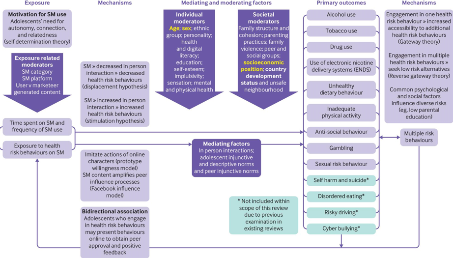

Introduction to Risks
Recommendation algorithms have become integral to optimising user experiences across various digital systems, including social media, e-commerce, and digital advertising. However, while these algorithms provide certain societal opportunities, they also pose significant risks, particularly to adolescents, who are more vulnerable to their negative effects. The risks associated with recommendation algorithms range from mental health impacts and impulsive consumer behaviour to privacy violations and the reinforcement of harmful social constructs. This research examines the specific risks posed by such algorithms in the aforementioned digital systems. It further explores the ethical considerations required to mitigate these risks and ensure a healthier digital environment for younger users.
Risks of Algorithmically Tailored Content Exposure on Social Media Platforms
Recommendation algorithms within social media platforms track user behaviour and deliver personalised content tailored to each individual's preferences. While this increases engagement, it also leads to significant risks. Studies show that adolescents are particularly vulnerable, as they are exposed to idealised images of life, beauty, and success, which can exacerbate feelings of inadequacy. This exposure correlates with increased anxiety, depression, and psychological distress among adolescents (Arora et al., 2024).
Moreover, social media platforms employ features designed to maximise user engagement, such as infinite scrolling and personalised notifications. Adolescents, whose impulse control is still developing, are particularly susceptible to these addictive mechanisms. As a result, excessive use can lead to long-term mental health consequences and behavioural issues. These features can create addictive feedback loops, prompting adolescents to spend excessive time online, often at the expense of their academic performance, sleep, and real-life interactions (George et al., 2024).
Figure 1 (Purba et al., 2023, p. 2) highlights how recommendation algorithms not only shape the content adolescents see but also influence their self-perception and worldview. This underscores the need for stronger educational and regulatory frameworks to mitigate these effects. Addressing these risks is critical to safeguarding young users' mental health, ensuring they engage with social media in a balanced, healthy way.
Figure 1
Mechanisms Linking Social Media Use and Health Risk Behaviours in Adolescents

Copyright 2023 by Purba et al.
Risks of Impulsive Consumer Behaviour Driven by Recommendation Algorithms within E-Commerce Platforms
E-commerce platforms have adopted similar algorithmic strategies to enhance shopping experiences by providing personalised product recommendations based on users' browsing and purchasing behaviours. While this personalisation can make online shopping more convenient, it also poses major risks, particularly for adolescents. Recommendation algorithms are known to amplify trends and offer personalised suggestions that create a sense of urgency, often through time-sensitive promotions, limited-time offers, and notifications that encourage immediate action. These tactics could potentially trigger fear of missing out (FOMO), making adolescents more likely to make impulsive purchases driven by emotion rather than necessity. For adolescents who may lack financial literacy, this behaviour can lead to financial instability, with long-term consequences for their spending habits and economic well-being (Nyrhinen et al., 2024).
The psychological consequences of algorithm-driven consumerism are equally concerning. Many e-commerce platforms, in conjunction with social media trends, compel young users to buy new products regularly to stay aligned with evolving fashion and lifestyle trends. Influencers and marketing campaigns reinforce these consumption patterns, promoting a sense of material dependence that is harmful to adolescents' self-worth. As they begin to equate their happiness with the ability to purchase new products, young users may develop unhealthy relationships with material possessions, viewing consumerism as a way to gain social validation.
Additionally, recommendation algorithms in e-commerce settings limit consumers' autonomy by continuously presenting similar products based on past behaviour (Necula & Păvăloaia, 2023). This narrowing of choices restricts users' exposure to new ideas and products, reinforcing existing consumer habits and making it difficult for them to make informed purchasing decisions. These algorithms can imply a restricted decision-making process, where users are nudged into making predictable and repetitive purchases (Wang et al., 2022). In this sense, such algorithms are not only influencing consumer behaviour but also shaping the broader consumption landscape by reinforcing patterns of overconsumption and impulsive buying.
Risks of the Utilisation of Recommendation Algorithms in Digital Advertising & Marketing
The utilisation of recommendation algorithms within digital advertising presents further risks and ethical concerns, particularly regarding privacy and consumer manipulation. Modern digital marketing relies on vast amounts of personal data to tailor advertisements to individual users, leveraging algorithms that track user interactions, browsing habits, and even social media activity to predict purchasing behaviours. However, Kumar and Suthar (2024) argue that this collection of personal data often happens without users' full understanding or consent, raising significant privacy risks and concerns. Adolescents, in particular, are vulnerable to privacy violations, as they may not be fully aware of how their data is being used to shape their online experiences and purchasing decisions.
The manipulation of consumer behaviour through personalised ads is another pressing issue. These algorithms are designed to predict which products or services will most appeal to users, often triggering emotional responses that lead to impulsive buying. Adolescents are particularly susceptible to these tactics, as they may lack the critical thinking skills needed to recognise when their consumer choices are being manipulated by recommendation algorithms. As a result, young users may find themselves purchasing items they don't need, driven by the allure of personalised advertisements rather than by conscious decision-making.
Furthermore, the constant exposure to personalised advertisements can result in ad fatigue, where users become overwhelmed by the sheer volume of targeted content. This fatigue often leads to disengagement, as consumers grow tired of being bombarded with ads that cater to their perceived preferences. Additionally, recommendation algorithms can reinforce harmful stereotypes by continuously pushing similar content, creating echo chambers that limit exposure to diverse perspectives (Walker & Milne, 2024). Adolescents are especially vulnerable to these echo chambers, where they are repeatedly exposed to content that reinforces narrow societal norms, such as unrealistic beauty standards or materialism. Recommendation algorithms in digital advertising can manipulate consumer behaviour by reinforcing these harmful stereotypes, highlighting the need for greater transparency and ethical considerations in data usage.
Conclusion to Risks
The risks posed by recommendation algorithms across social media, e-commerce, digital advertisements and marketing are diverse and multifaceted, disproportionately affecting adolescents. These risks include mental health issues, impulsive buying behaviour, privacy violations, and the reinforcement of harmful societal norms. As these algorithms continue to shape daily digital interactions, it is imperative that policymakers, educators, and platforms take proactive steps to address the risks and challenges posed by algorithmic integration within digital systems.
Style modified using Tailwind CSS